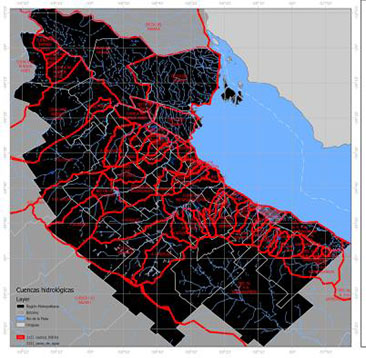

3-CARACTERISTICAS URBANISTICAS
3.1. Condiciones ambientales
3.1.1. Clima
3.1.2. Hidrología
3.1.3. Geomorfología
3.2. Ocupación del suelo
3.2.1. Uso residencial
3.2.2. Uso Comercial e Industrial
3.2.3. Uso espacio verde
3.3. Equipamiento
3.3.1 Educación
3.3.2. Salud
3.4 Infraestructura
3.4.1. Transporte Vial
3.4.3. Transporte Aéreo
3.4.4. Transporte Fluvial y Marítimo
3.4.5. Energía
3.4.6. Saneamiento
3.4.7. Comunicaciones